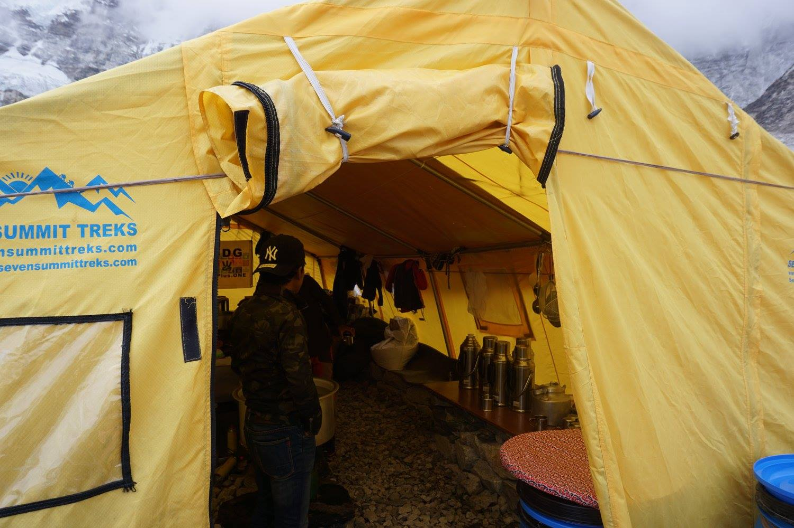
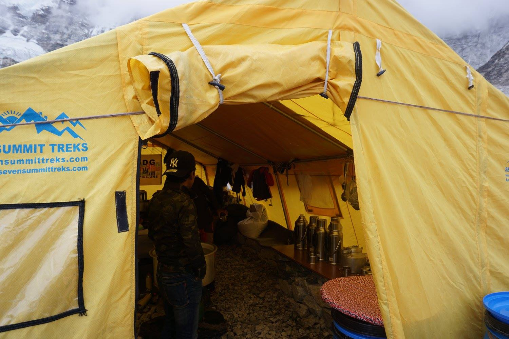

We made it to Base Camp the day before. We had been hiking around, along and on top of the Kumbu Glacier
for several days and in the final day or two seen teasing glimpses of the colourful splashes of
Base Camp tests in the very far distance. Nothing can quite prepare you for both the bizar and
inspiring sight of Base Camp. The shear number of tents and engenuity is inspiring
whilst also painstakingly unnatural. The air is electric with hopes and dreams and an unmistakeable
undertone of fear bordering on regret. Everest's icefall looms in the backdrop, a dare from the Mother of
mountins
herself, reminding everyone of why they are here and why they may never leave.
After exploring Base Camp and spending time exchanging tales with the climbers who currently call base camp home, we settled in at our own tea house for refreshments and to plan our own climb in the morning. Rogs, Kendra Natasha and myself all huddled over our hot bowls of noodles and tea buzzing from our adventures so far and the intoxicating energy of the mountains. We had one more night together and one more climb. In the morning before dawn we were to set off for the summit of Mt Kallipitar. Only a short distance compared to how far we have already climbed but the altitude is taking it's toll. I had started to feel nauseous staring at my noodles, it was getting late and we were all tired so we had an early night ready for our early start.
During the night I was restless. I woke frequently coughing or gasping for air, my head pounded and the nausia was relentless. My throat was sore and raspy and by the morning I could only get out a whisper. I thought it was a chest infection, thankfully we had come prepared with antibiotics so I took some meds and Rogs and I went to join the others. Kendra and Natasha were having breakfast when we arrived, ordinarily the Kallipitar Summit is done before dawn as the view of Everest with the sun rising behind her is said to be memeriable even after death...sadly for us a storm was brewing and there was no chance of seeing anything so we all opted for an extra few hours of sleep!
A few hours later, rince repeat only this time the cloud cover was clearing so we set off. Everone was concerned about my health but I pushed on convinced it was just my throat being stripped from the beyond cold air and, worst case, a chest infection which I was taking meds for anyway - so, onwards!! However, the higher we climbed the worse I got. No voice, coughing up blood (discretely so the others wouldn't see and turn me around) and struggling just to put one foot in front of the other. Ordinarily, I am the springbuck, leaping ahead effortless never tiring never losing enthusiasm, never looking down in case I miss something ahead or around us...today it took everything just for me to look at my feet to command them one in front of the other at a pace so slow I didn't know it existed!
But I knew it was just a matter of one foot at a time and I would, eventually, get there. And we did!
From the summit of Kallipitar one can actually see the top of Everest in all her glory, and she is glorious!

 
